Sites | VRTs |
|---|---|
1,159 | 243,496 |
Webdata
Total Number of VRTs
All Sites AASI-1 through 3
Updated January 2025
Total Number of Questionnaires
All Sites AASI-1 through 3
Updated January 2025
Questionnaire Type | Count |
|---|---|
Adult Males | 154,677 |
Adult Females | 5,475 |
Adolescent Males | 30,210 |
Adolescent Females | 1,424 |
Total | 191,786 |
Adult - Gender
Male Counts | Male Percent | Female Counts | Female Percent |
|---|---|---|---|
154,677 | 96.6% | 5,475 | 3.4% |
Adult - Age
Age | Male Counts | Male Percent | Female Counts | Female Percent |
|---|---|---|---|---|
LT 25 Yrs | 27,824 | 18.0% | 1,071 | 19.6% |
25-34 Yrs | 38,623 | 25.0% | 2,093 | 38.2% |
35-44 Yrs | 38,938 | 25.2% | 1,488 | 27.2% |
45-54 Yrs | 27,212 | 17.6% | 612 | 11.2% |
55 Yrs + | 22,080 | 14.3% | 211 | 3.9% |
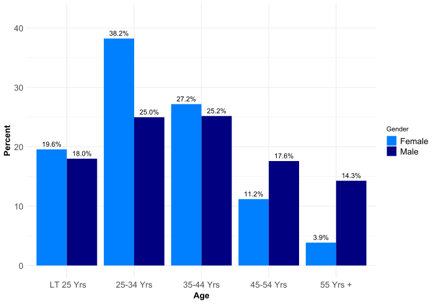
Adult - Race
Race | Male Counts | Male Percent | Female Counts | Female Percent |
|---|---|---|---|---|
Hispanic | 22,991 | 14.9% | 592 | 10.8% |
African - | 15,854 | 10.2% | 435 | 7.9% |
Caucasian | 102,476 | 66.3% | 4,027 | 73.6% |
Asian - | 2,451 | 1.6% | 66 | 1.2% |
Native - | 4,943 | 3.2% | 148 | 2.7% |
Other | 2,881 | 1.9% | 83 | 1.5% |
Biracial | 2,996 | 1.9% | 122 | 2.2% |
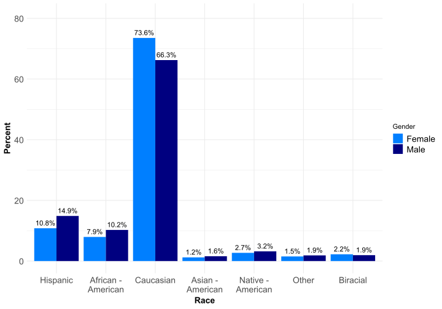
Adult - Marital Status
Marital Status | Male Counts | Male Percent | Female Counts | Female Percent |
|---|---|---|---|---|
Single | 62,456 | 40.4% | 1,842 | 33.6% |
Separated | 12,184 | 7.9% | 703 | 12.8% |
Divorced | 30,544 | 19.7% | 1,117 | 20.4% |
Widowed | 1,791 | 1.2% | 83 | 1.5% |
Live w/Partner | 8,743 | 5.7% | 388 | 7.1% |
Married | 38,830 | 25.1% | 1,335 | 24.4% |
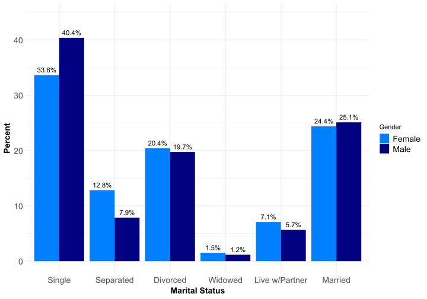
Adult - Religion
Religion | Male Counts | Male Percent | Female Counts | Female Percent |
|---|---|---|---|---|
Roman Catholic | 31,002 | 20.0% | 876 | 16.0% |
Jewish | 2,564 | 1.7% | 57 | 1.0% |
Muslim | 1,662 | 1.1% | 33 | 0.6% |
Pentecostal | 8,286 | 5.4% | 331 | 6.0% |
Baptist | 27,117 | 17.5% | 1,054 | 19.3% |
Episcopal | 1,886 | 1.2% | 69 | 1.3% |
Methodist | 6,031 | 3.9% | 236 | 4.3% |
Lutheran | 5,174 | 3.3% | 166 | 3.0% |
Mormon | 3,843 | 2.5% | 147 | 2.7% |
Eastern | 475 | 0.3% | 19 | 0.3% |
Presbyterian | 2,398 | 1.6% | 68 | 1.2% |
Other | 26,654 | 17.2% | 1,073 | 19.6% |
None | 35,264 | 22.8% | 1,300 | 23.7% |
Atheist | 2,183 | 1.4% | 43 | 0.8% |
Adult - Education
Education | Male Counts | Male Percent | Female Counts | Female Percent |
|---|---|---|---|---|
Less Than | 6,544 | 4.2% | 188 | 3.4% |
Junior | 6,282 | 4.1% | 257 | 4.7% |
Some High | 25,081 | 16.2% | 916 | 16.7% |
High | 46,001 | 29.7% | 1,441 | 26.3% |
Some | 35,120 | 22.7% | 1,225 | 22.4% |
College | 22,000 | 14.2% | 951 | 17.4% |
Graduate | 13,512 | 8.7% | 492 | 9.0% |
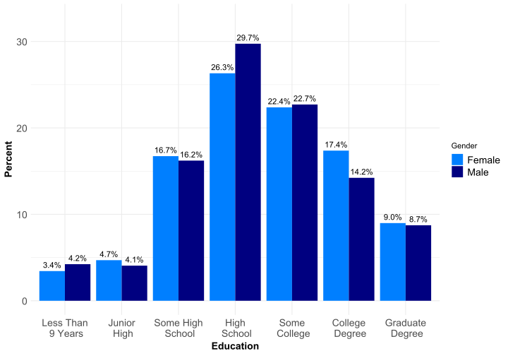
Adult - Income
Income | Male Counts | Male Percent | Female Counts | Female Percent |
|---|---|---|---|---|
None | 21,727 | 14.0% | 667 | 12.2% |
Under | 15,622 | 10.1% | 677 | 12.4% |
$2K to | 25,310 | 16.4% | 1,290 | 23.6% |
$15K to | 21,705 | 14.0% | 812 | 14.8% |
$25K to | 21,727 | 14.0% | 692 | 12.6% |
$40K to | 18,582 | 12.0% | 546 | 10.0% |
$60K to | 23,686 | 15.3% | 626 | 11.4% |
$150K to | 5,147 | 3.3% | 127 | 2.3% |
$400K + | 852 | 0.6% | 21 | 0.4% |
Adult - Victimization
Victimization | Male Counts | Male Percent | Female Counts | Female Percent |
|---|---|---|---|---|
None | 117,342 | 75.9% | 2,912 | 53.2% |
Once | 13,866 | 9.0% | 756 | 13.8% |
2 Times | 6,289 | 4.1% | 405 | 7.4% |
3-10 | 10,084 | 6.5% | 715 | 13.1% |
11-50 | 4,440 | 2.9% | 378 | 6.9% |
More Than | 2,518 | 1.6% | 302 | 5.5% |
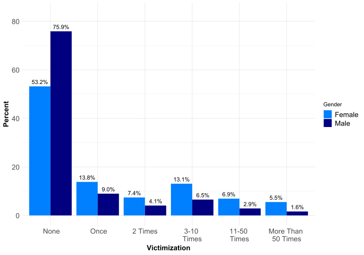
Adult - Sexual Orientation - Kinsey Scale
Sexual Orientation | Male Counts | Male Percent | Female Counts | Female Percent |
|---|---|---|---|---|
Heterosexual | 134,243 | 86.8% | 4,066 | 74.3% |
Incidental | 6,266 | 4.1% | 391 | 7.1% |
More | 2,012 | 1.3% | 124 | 2.3% |
Equally | 3,222 | 2.1% | 349 | 6.4% |
More | 1,258 | 0.8% | 65 | 1.2% |
Incidental | 1,736 | 1.1% | 84 | 1.5% |
Homosexual | 5,146 | 3.3% | 361 | 6.6% |
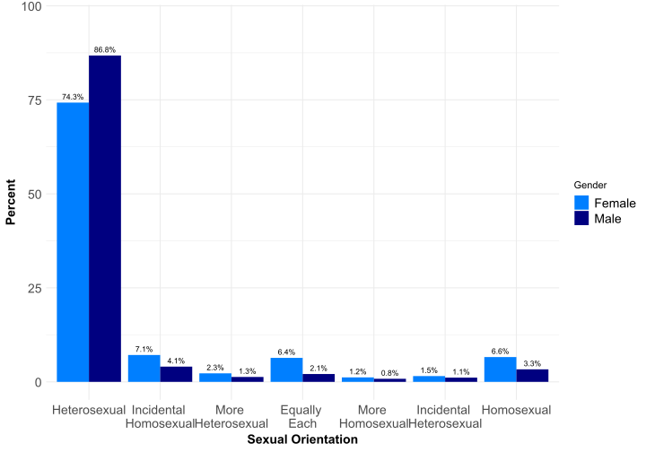
Adult - Problematic Sexual Behaviors Group 1
Behavior | Male.Counts | Male.Percent | Female.Counts | Female.Percent |
|---|---|---|---|---|
Child Molestation | 34,010 | 22% | 682 | 12.5% |
Child Pornography | 12,988 | 19.5% | 87 | 3.9% |
Child Contact | 6,620 | 10% | 190 | 8.5% |
| NOTE 1: Child Pornography is the use of pornography of minors. |
| NOTE 2: Child Contact is the communicating with or meeting for sexual purposes. |
| NOTE 3: Child Contact and Child Pornography counts are smaller because these behaviors were introduced in the AASI-3. |
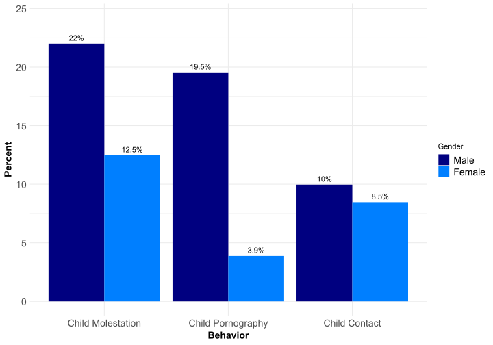
Adult - Problematic Sexual Behaviors Group 2
Behavior | Male.Counts | Male.Percent | Female.Counts | Female.Percent |
|---|---|---|---|---|
Rape | 2,531 | 1.6% | 34 | 0.6% |
Frottage | 6,002 | 3.9% | 51 | 0.9% |
Obscene Calls/Texts | 14,232 | 9.2% | 528 | 9.6% |
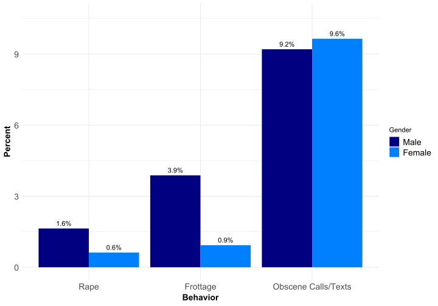
Adult - Problematic Sexual Behaviors Group 3
Behavior | Male.Counts | Male.Percent | Female.Counts | Female.Percent |
|---|---|---|---|---|
Public Exposure | 10,310 | 6.7% | 301 | 5.5% |
Public Masturbation | 9,627 | 6.2% | 121 | 2.2% |
Voyeurism | 15,717 | 10.2% | 91 | 1.7% |
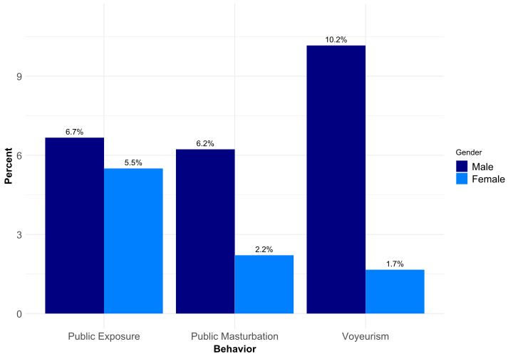
Adult - Problematic Sexual Behaviors Group 4
Behavior | Male.Counts | Male.Percent | Female.Counts | Female.Percent |
|---|---|---|---|---|
Bestiality | 7,474 | 4.8% | 214 | 3.9% |
Copraphilia | 2,123 | 1.4% | 39 | 0.7% |
Sadism | 2,701 | 1.7% | 69 | 1.3% |
Masochism | 2,917 | 1.9% | 276 | 5% |
Fetishism | 8,342 | 5.4% | 103 | 1.9% |
Transvestism | 5,850 | 3.8% | 57 | 1% |
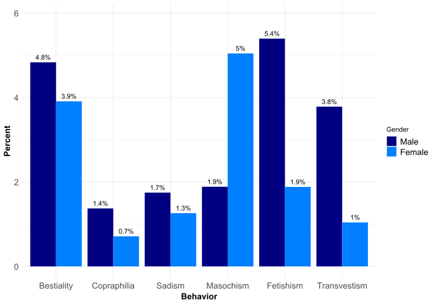
Adult - Problematic Sexual Behaviors Group 5
Behavior | Male.Counts | Male.Percent | Female.Counts | Female.Percent |
|---|---|---|---|---|
Pornography | 43,522 | 28.1% | 396 | 7.2% |
Prostitution | 32,864 | 21.3% | 139 | 2.5% |
Internet Sex | 25,384 | 23.9% | 235 | 6.4% |
Phone Sex | 6,567 | 4.2% | 46 | 0.8% |
Affairs | 52,152 | 33.7% | 1,661 | 30.4% |
Affairs | 43,717 | 28.3% | 1,192 | 21.8% |
| NOTE 1: Prostitution is the use of prostitutes. |
| NOTE 2: Internet Sex is the use of the internet for sexual purpose. |
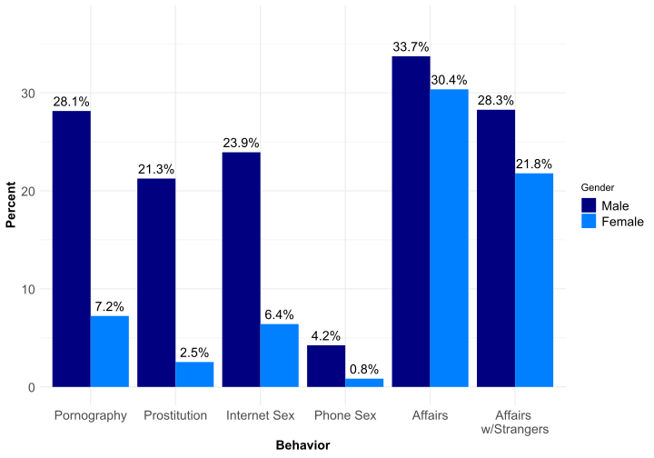
Adult - Child Sexual Abusers
Onset, End, Number of Children and Number of Times
Variable | Male.Mean | Male.Median | Female.Mean | Female.Median |
|---|---|---|---|---|
Age First | 24.9 | 22.0 | 25.4 | 24.5 |
Age Last | 31.3 | 30.0 | 27.7 | 27.0 |
Number of Children | 6.0 | 2.0 | 2.2 | 1.0 |
Number of Times - | 34.1 | 5.0 | 26.8 | 3.0 |
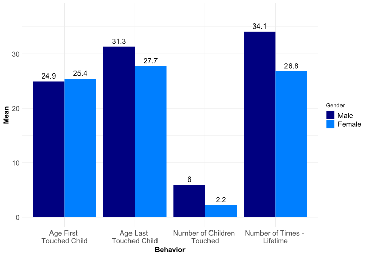
Adult - Child Sexual Abusers - Amount of Force Used
Behavior | Male.Counts | Male.Percent | Female.Counts | Female.Percent |
|---|---|---|---|---|
Started by | 4,831 | 14.2% | 167 | 24.5% |
Mutual | 14,488 | 42.6% | 349 | 51.2% |
Verbal | 2,126 | 6.3% | 45 | 6.6% |
Physical | 2,057 | 6% | 28 | 4.1% |
Excessive | 1,718 | 5.1% | 44 | 6.5% |
Death | 39 | 0.1% | 3 | 0.4% |
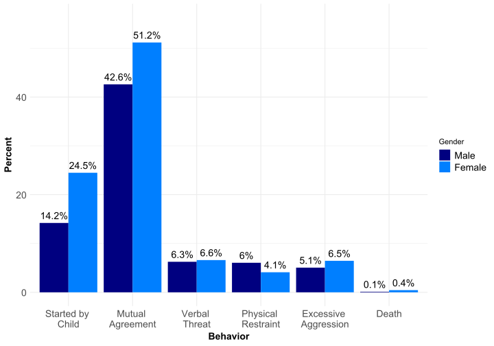
Adult - Child Sexual Abusers - Gender and Age of Victims
Behavior | Male.Counts | Male.Percent | Female.Counts | Female.Percent |
|---|---|---|---|---|
Boys under 14 | 4,118 | 12.1% | 101 | 14.8% |
Boys 14-17 | 1,813 | 5.3% | 202 | 29.6% |
Girls under 14 | 12,533 | 36.9% | 114 | 16.7% |
Girls 14-17 | 8,321 | 24.5% | 94 | 13.8% |
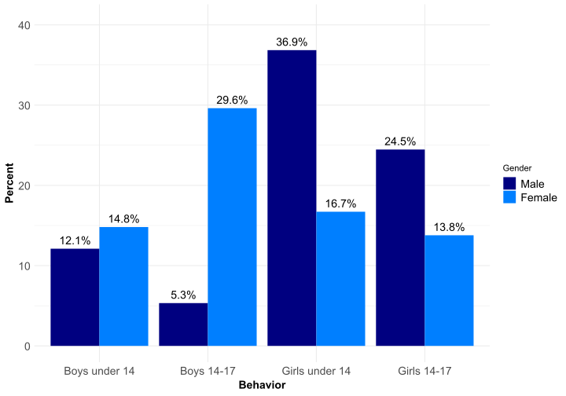
Adult - Child Sexual Abusers - Relationship to Victims
Behavior | Male.Counts | Male.Percent | Female.Counts | Female.Percent |
|---|---|---|---|---|
Biological Children | 4,059 | 11.9% | 78 | 11.4% |
Stepchildren or Children of Live-in Partner | 6,531 | 19.2% | 41 | 6% |
Foster Children | 280 | 0.8% | 14 | 2.1% |
Adopted Children | 723 | 2.1% | 2 | 0.3% |
Grandchildren | 1,323 | 3.9% | 12 | 1.8% |
Younger Brothers & Sisters | 4,095 | 12% | 69 | 10.1% |
Nieces & Nephews | 4,910 | 14.4% | 97 | 14.2% |
Children of Neighbors or Other Acquaintances | 13,437 | 39.5% | 268 | 39.3% |
Children Left in My Care by Organization | 1,267 | 3.7% | 68 | 10% |
Strangers | 5,504 | 16.2% | 64 | 9.4% |
Children Who I Teach | 294 | 2.1% | 47 | 14.8% |
Children Who I coach or Train | 224 | 1.6% | 11 | 3.5% |
Children Who Are Patients or Clients | 61 | 0.4% | 4 | 1.3% |
Children Who I Connect with in a Religious Context | 312 | 2.2% | 14 | 4.4% |
Adolescent - Gender
Male Counts | Male Percent | Female Counts | Female Percent |
|---|---|---|---|
30,210 | 95.5% | 1,424 | 4.5% |
Adolescent - Age
Age | Male Counts | Male Percent | Female Counts | Female Percent |
|---|---|---|---|---|
11 Yrs Old | 160 | 0.5% | 13 | 0.9% |
12 Yrs Old | 1,274 | 4.2% | 97 | 6.8% |
13 Yrs Old | 3,521 | 11.7% | 204 | 14.3% |
14 Yrs Old | 5,677 | 18.8% | 322 | 22.6% |
15 Yrs Old | 6,584 | 21.8% | 293 | 20.6% |
16 Yrs Old | 6,774 | 22.4% | 291 | 20.4% |
17 Yrs Old | 6,220 | 20.6% | 204 | 14.3% |
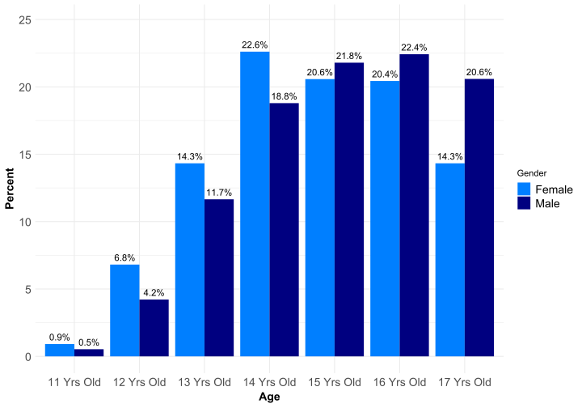
Adolescent - Race
Race | Male Counts | Male Percent | Female Counts | Female Percent |
|---|---|---|---|---|
Hispanic | 4,072 | 13.5% | 127 | 8.9% |
African - | 4,757 | 15.7% | 281 | 19.7% |
Caucasian | 17,718 | 58.6% | 804 | 56.5% |
Asian - | 243 | 0.8% | 6 | 0.4% |
Native - | 1,234 | 4.1% | 42 | 2.9% |
Other | 1,159 | 3.8% | 80 | 5.6% |
Biracial | 988 | 3.3% | 83 | 5.8% |
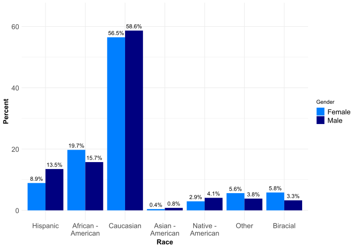
Adolescent - Religion
Religion | Male Counts | Male Percent | Female Counts | Female Percent |
|---|---|---|---|---|
Roman Catholic | 4,388 | 14.5% | 127 | 8.9% |
Jewish | 322 | 1.1% | 8 | 0.6% |
Muslim | 256 | 0.8% | 8 | 0.6% |
Pentecostal | 778 | 2.6% | 42 | 2.9% |
Baptist | 5,847 | 19.4% | 361 | 25.4% |
Episcopal | 172 | 0.6% | 5 | 0.4% |
Methodist | 917 | 3.0% | 52 | 3.7% |
Lutheran | 806 | 2.7% | 52 | 3.7% |
Mormon | 723 | 2.4% | 25 | 1.8% |
Eastern | 51 | 0.2% | 0 | 0.0% |
Presbyterian | 2,457 | 8.1% | 96 | 6.7% |
Other | 8,152 | 27.0% | 391 | 27.5% |
None | 4,736 | 15.7% | 226 | 15.9% |
Atheist | 537 | 1.8% | 29 | 2.0% |
Adolescent - Education Level
Education | Male Counts | Male Percent | Female Counts | Female Percent |
|---|---|---|---|---|
High School | 818 | 2.7% | 28 | 2.0% |
Some High | 10,744 | 35.6% | 414 | 29.1% |
Junior High | 5,786 | 19.2% | 244 | 17.1% |
7th or 8th | 9,863 | 32.6% | 539 | 37.9% |
Grade | 2,956 | 9.8% | 197 | 13.8% |
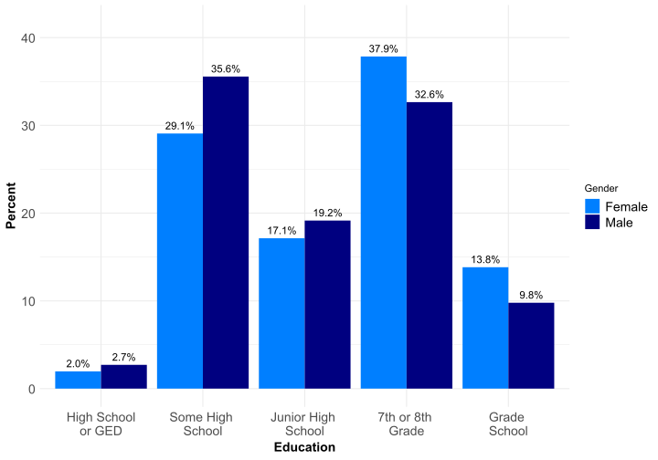
Adolescent - Repeated Grade
Repeated Grade | Male Counts | Male Percent | Female Counts | Female Percent |
|---|---|---|---|---|
None | 19,169 | 63.5% | 941 | 66.1% |
1 Yr | 8,394 | 27.8% | 365 | 25.6% |
2 Yrs | 2,066 | 6.8% | 86 | 6.0% |
3 Yrs | 367 | 1.2% | 23 | 1.6% |
4 or more Yrs | 173 | 0.6% | 9 | 0.6% |
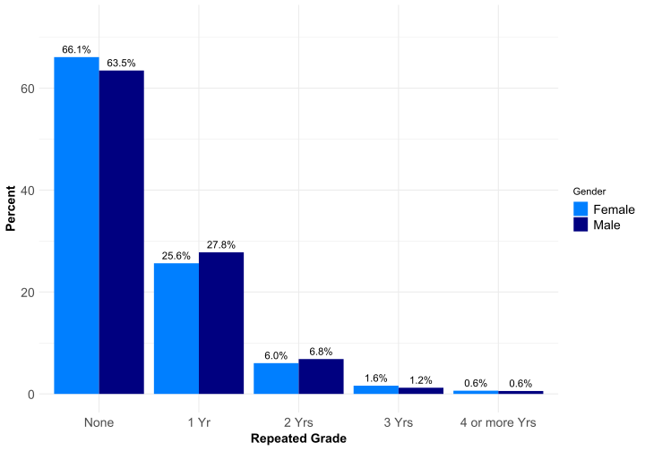
Adolescent - Special Education
Special Education | Male Counts | Male Percent | Female Counts | Female Percent |
|---|---|---|---|---|
None | 17,827 | 59.0% | 885 | 62.1% |
1 Yr | 1,799 | 6.0% | 91 | 6.4% |
2 Yrs | 1,765 | 5.8% | 77 | 5.4% |
3 Yrs | 1,506 | 5.0% | 53 | 3.7% |
4 or more Yrs | 7,234 | 23.9% | 317 | 22.3% |
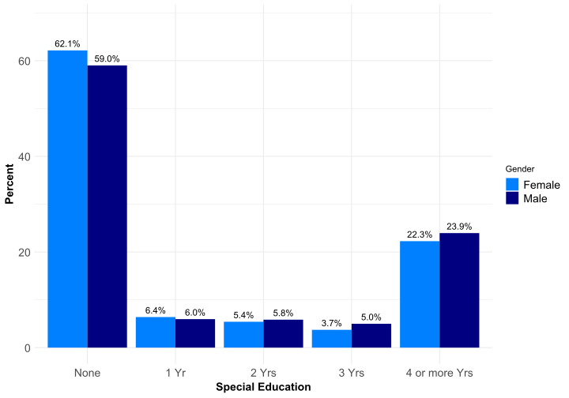
Adolescent - Impregnated Girl/Times Pregnant
Pregnant | Male Counts | Male Percent | Female Counts | Female Percent |
|---|---|---|---|---|
Never | 28,924 | 95.7% | 1,324 | 93.0% |
Once | 946 | 3.1% | 73 | 5.1% |
Twice | 183 | 0.6% | 14 | 1.0% |
3 times | 50 | 0.2% | 6 | 0.4% |
4 or more times | 54 | 0.2% | 6 | 0.4% |
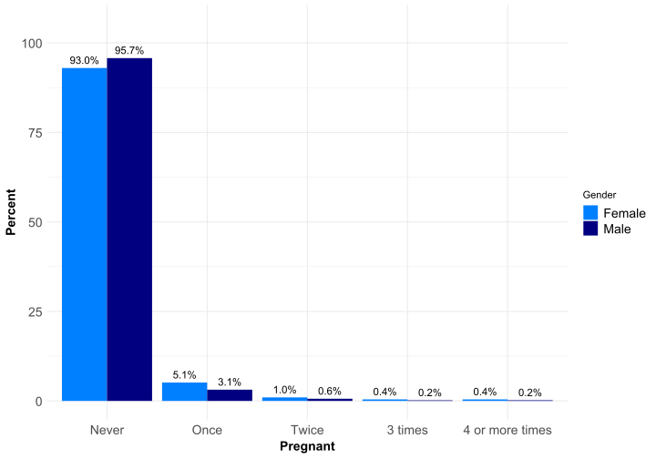
Adolescent - Number of Families Lived With
Families | Male Counts | Male Percent | Female Counts | Female Percent |
|---|---|---|---|---|
None | 2,409 | 8.0% | 217 | 15.2% |
One | 13,287 | 44.0% | 346 | 24.3% |
Two | 6,718 | 22.2% | 246 | 17.3% |
Three | 3,154 | 10.4% | 194 | 13.6% |
Four | 1,585 | 5.2% | 115 | 8.1% |
Five | 996 | 3.3% | 85 | 6.0% |
Six | 552 | 1.8% | 54 | 3.8% |
Seven | 1,462 | 4.8% | 167 | 11.7% |
Adolescent - Times Raped
Times Raped | Male Counts | Male Percent | Female Counts | Female Percent |
|---|---|---|---|---|
None | 23,383 | 77.4% | 740 | 52.0% |
Once | 2,285 | 7.6% | 171 | 12.0% |
2 Times | 1,229 | 4.1% | 129 | 9.1% |
3-10 Times | 1,887 | 6.2% | 195 | 13.7% |
11-50 Times | 820 | 2.7% | 93 | 6.5% |
> 50 Times | 536 | 1.8% | 91 | 6.4% |
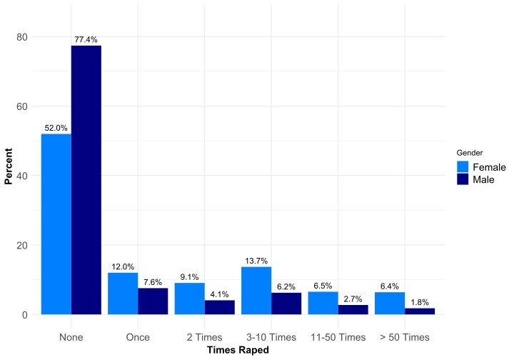
Adolescent - Sexual Orientation
Orientation | Male Counts | Male Percent | Female Counts | Female Percent |
|---|---|---|---|---|
Always Straight | 24,353 | 80.6% | 859 | 60.3% |
Mostly Straight | 4,171 | 13.8% | 383 | 26.9% |
Mostly Gay | 821 | 2.7% | 99 | 7.0% |
Always Gay | 489 | 1.6% | 63 | 4.4% |

Adolescent - Accused
Orientation | Male Counts | Male Percent | Female Counts | Female Percent |
|---|---|---|---|---|
Always Straight | 24,353 | 80.6% | 859 | 60.3% |
Mostly Straight | 4,171 | 13.8% | 383 | 26.9% |
Mostly Gay | 821 | 2.7% | 99 | 7.0% |
Always Gay | 489 | 1.6% | 63 | 4.4% |
Adolescent - Not Accused
Not Accused | Male Counts | Male Percent | Female Counts | Female Percent |
|---|---|---|---|---|
Not Blamed, Have Touched | 3,971 | 13.1% | 185 | 13.0% |
Not Blamed, Never Touched | 8,370 | 27.7% | 446 | 31.3% |
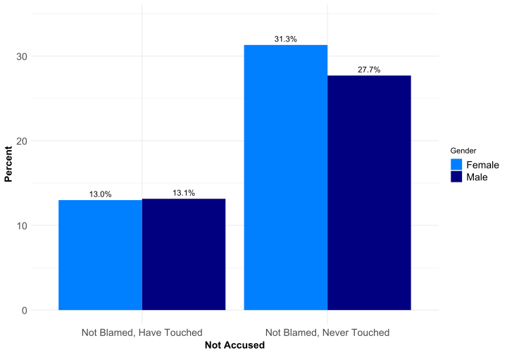
Adolescent - Sexual Behaviors Group 1
Not Accused | Male Counts | Male Percent | Female Counts | Female Percent |
|---|---|---|---|---|
Not Blamed, Have Touched | 3,971 | 13.1% | 185 | 13.0% |
Not Blamed, Never Touched | 8,370 | 27.7% | 446 | 31.3% |
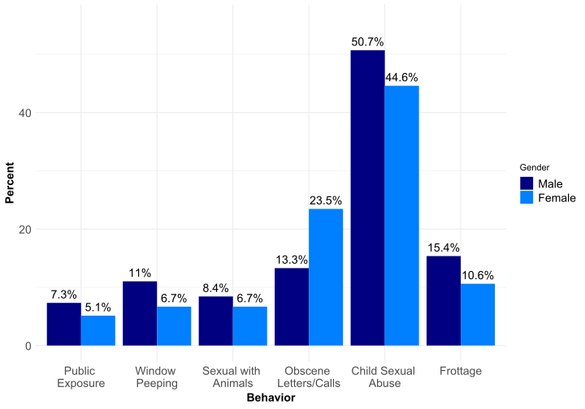
Adolescent - Sexual Behaviors Group 2
Not Accused | Male Counts | Male Percent | Female Counts | Female Percent |
|---|---|---|---|---|
Not Blamed, Have Touched | 3,971 | 13.1% | 185 | 13.0% |
Not Blamed, Never Touched | 8,370 | 27.7% | 446 | 31.3% |
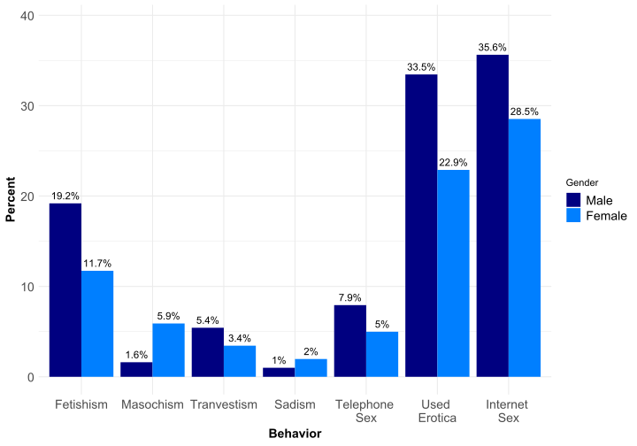
Adolescent - Child Sexual Abusers
Onset, End, Number of Children and Number of Times
Variable | Male.Mean | Male.Median | Female.Mean | Female.Median |
|---|---|---|---|---|
Age First | 12.2 | 13.0 | 11.3 | 12.0 |
Age Last | 13.3 | 13.0 | 12.4 | 13.0 |
Number of Children | 2.9 | 1.0 | 3.1 | 2.0 |
Number of Times - | 10.5 | 3.0 | 8.8 | 3.0 |
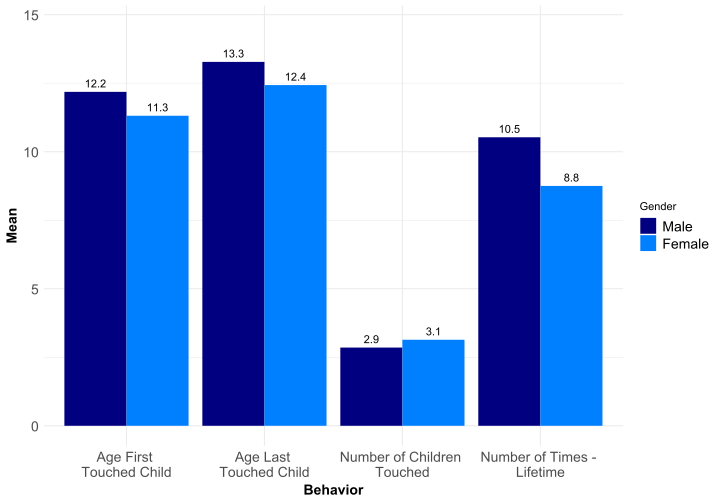
Adolescent - Child Sexual Abusers - Amount of Force Used
Behavior | Male.Counts | Male.Percent | Female.Counts | Female.Percent |
|---|---|---|---|---|
Initiated by Child | 1,769 | 11.6% | 91 | 14.3% |
Mutual Consent | 3,872 | 25.3% | 180 | 28.3% |
Promised Toy | 3,893 | 25.4% | 116 | 18.3% |
Tricked Kid | 4,242 | 27.7% | 138 | 21.7% |
Verbal Threat | 1,059 | 6.9% | 49 | 7.7% |
Physical Restraint | 458 | 3% | 25 | 3.9% |
Physical Aggression | 136 | 0.9% | 12 | 1.9% |
Death of Child | 15 | 0.1% | 0 | 0% |
Adolescent - Child Sexual Abusers - Age & Gender
Behavior | Male.Counts | Male.Percent | Female.Counts | Female.Percent |
|---|---|---|---|---|
Girls 3-4 | 5,264 | 34.4% | 198 | 31.2% |
Boys 3-4 | 3,689 | 24.1% | 221 | 34.8% |
Girls 5+ | 7,020 | 45.9% | 232 | 36.5% |
Boys 5+ | 4,413 | 28.8% | 216 | 34% |
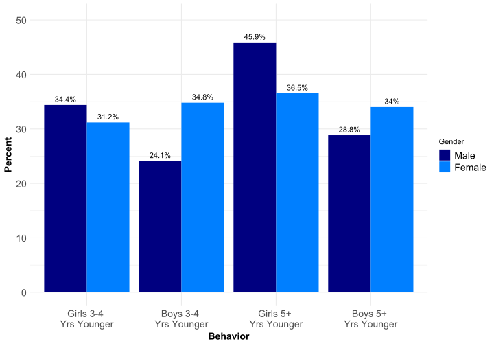
Adolescent - Child Sexual Abusers - Relationship to Victims
Behavior | Male.Counts | Male.Percent | Female.Counts | Female.Percent |
|---|---|---|---|---|
Younger Sibling | 7,219 | 47.2% | 304 | 47.9% |
Foster Sibling | 838 | 5.5% | 69 | 10.9% |
Other Family | 4,717 | 30.8% | 194 | 30.6% |
Non-Family | 5,029 | 32.9% | 195 | 30.7% |
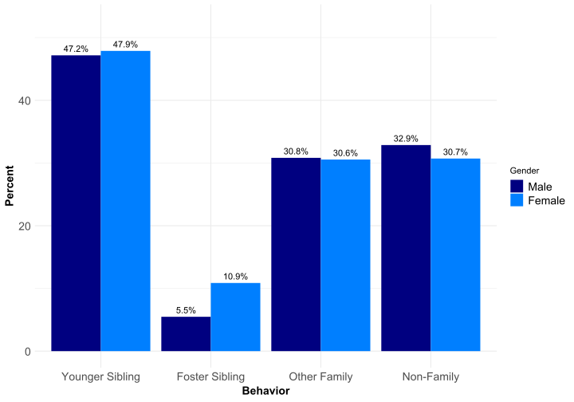